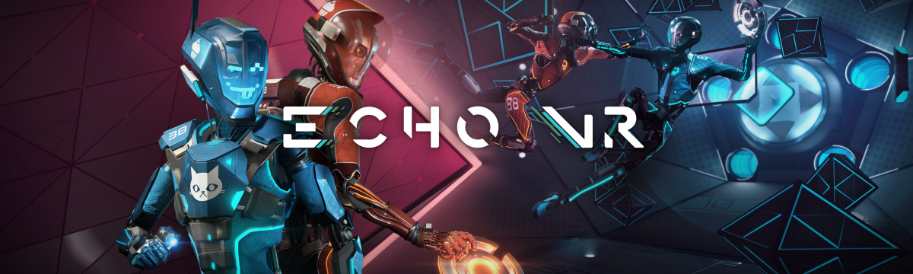
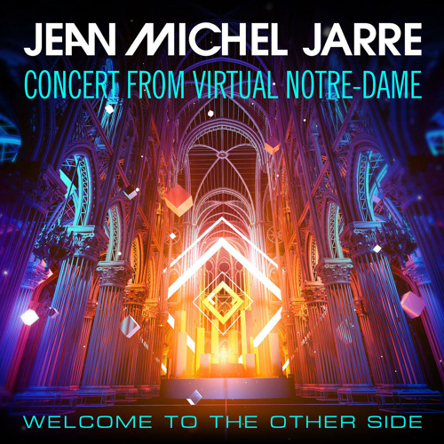
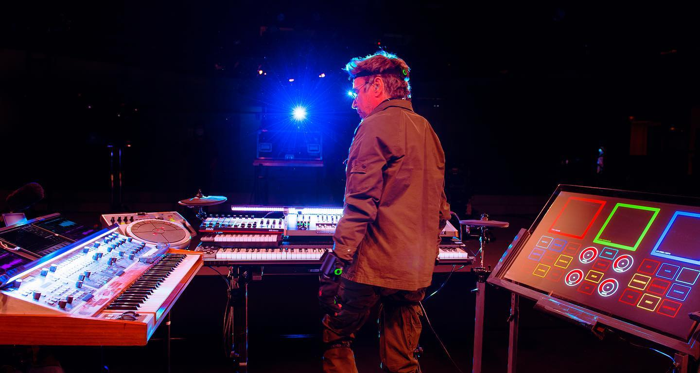
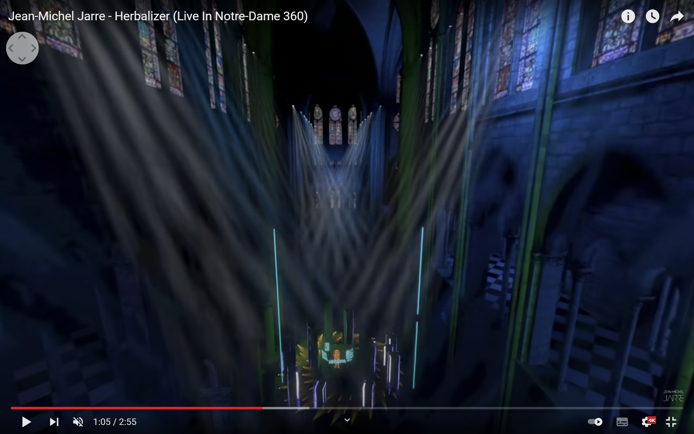
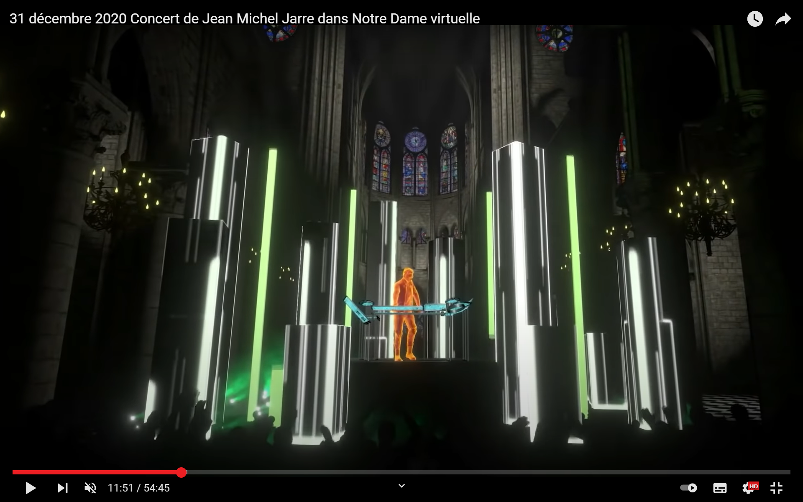
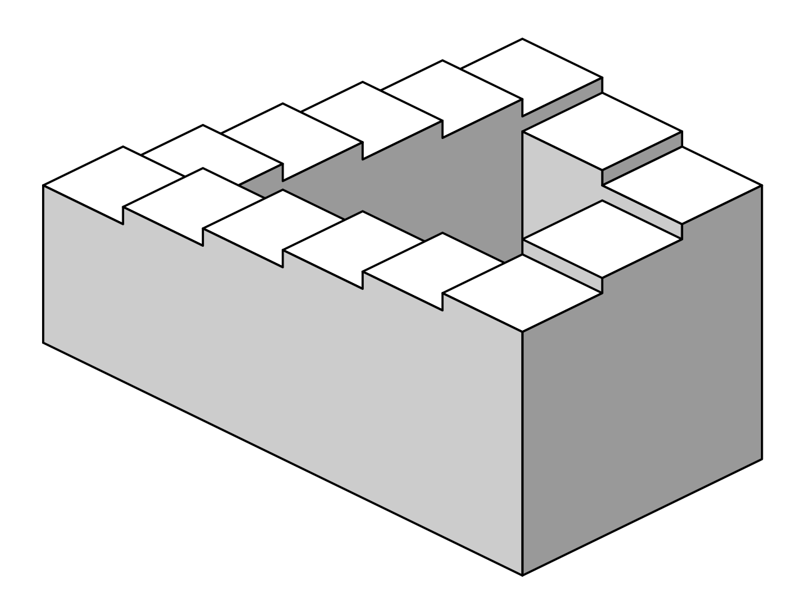
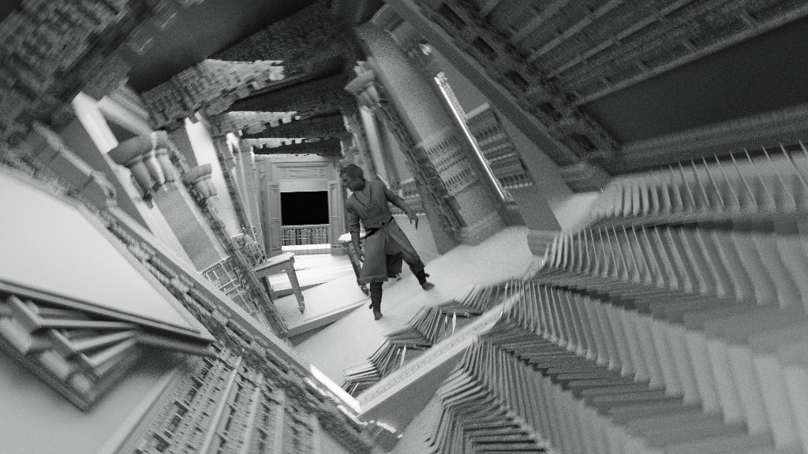
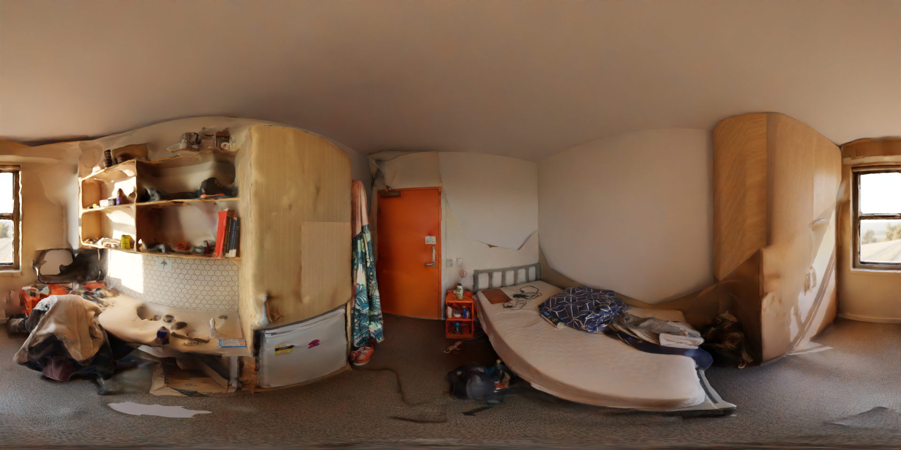
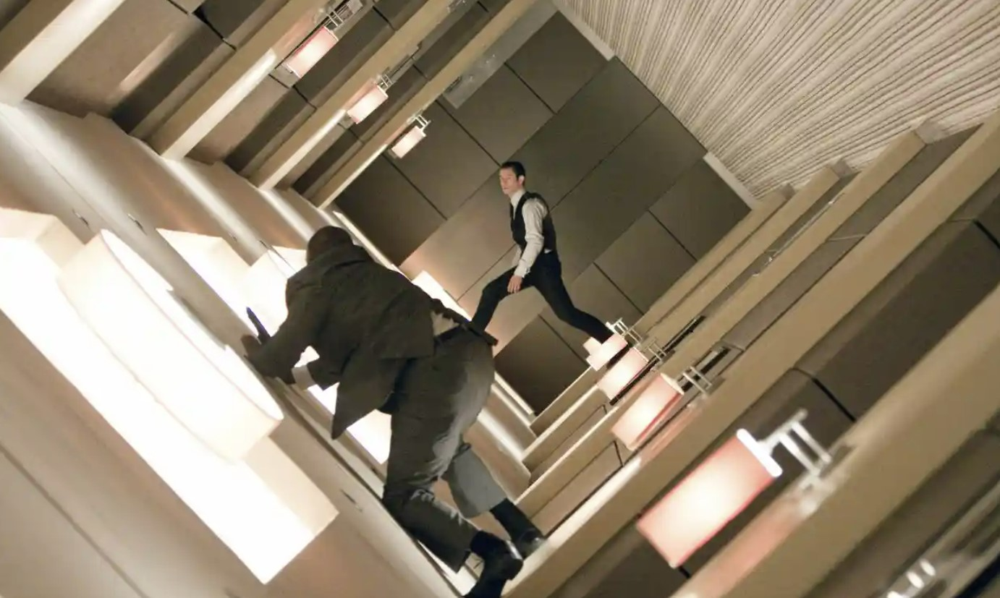

Mixed Reality Production
Semester 1, 2022, The University Of Sydney
Erik Bauscher
More thinking 'bout the project
Project Update, 10.06.22
I'm gonna create a space in VR, where u can navigate through via the vr controllers, and where u can either experience different versions of one space or multiple spaces at the time.
Therefore, I need to figure out how u can use the joysticks in react-three-fibre, and then how the joysticks can move the camera. After this I need to import 3D meshes in the scene,
and potentially also edit them as an animation in the scene. I also need to figure out how to play sounds, when the player is at a certain point. Last I need to solve collisions so that nobody is flying out of the actual scene.
Here again in short:
controls -> navigation -> models -> sound -> models
And once I have solved all the technical things, I have to figure out what I actually gonna show. That's kinda the story of my semester. First the technical stuff, then the what?!.
I am probably gonna think about it starting now, and hope once the technical stuff is done I have the perfect idea already in my mind. Currently I think 3D worlds definitely make sense,
since the players are actually able to move freely in space. So no 360 footage! Then the scene needs to be kinda light. Can't come with thousands of faces per mesh, remember it is running in the browser.
And lastly, it is always good the get personal, so it might be spaces from my personal live, but represented not as a pure 3D scan but modified (cause of technical limits and artists likings).
Ok ten minutes later, here's the first idea:
There are gonna be multiple spaces (geometrically defined by sth like a sphere) arrayed linearly after each other.
There have entrances and exits so that one can walk through them. Every space follows a theme, which is personal to me and reflects sth in my life.
Once entered, sound is being played and maybe there is even a voice over of me talking about the space. So what's in there to see?
The sphere works like a container, where objects are randomly put in the space (maybe they even move through space). These objects a fragments, 3D scanned scenes of my life.
For example, one sphere could represent my current home, a student accomodation. I'll scan parts of the kitchen, my room, people, the rooftop terrace and so on.
Then I'll randomnly place these scans in space. The great thing is these objects do not need to be at same scale. I can scan food I cooked this day and scale it up to be the same size of my room.
All those objects are gonna float in space, and the visitor is moving in between them. Probably, collision won't be archievable, at least not for me, and the viewer can fly though the objects.
But I guess that's alright. This is also why there must be an outer geometry which works as a border not only for the objects but also the visitor.
I could put one 360 image, or even movie on this sphere, but dunno how this connects right now to the rest. Anyways sounds fun.
What is the purpose of that all?
Well, don't ask me, find it yourself. I guess a new perspective on my life. I reckon mostly I am gonna find purpose in all of that once I start 3D scanning and assembling stuff.
You can figure out a lot once we do something, so that's what I am counting on.
Cheers!
Echo VR
Post 3, 18.05.22

Anybody seen "Ender's Game"?
When I borrowed the Quest 2, I at least wanted to play one game on it. After seeing the prizes for most of the games, I stumbled across "Echo VR",
which is free in the Oculus store.
It is a game by Oculus and pretty much mirroring the game the play as training in the movie "Ender's Game".
It is played in space, so no gravity. You move by pushing some buttons and aiming either your head or hands in the right direction, and the bossters more you there.
You can also grap object with you hand by forming it into a grabbing fist. This way you move a lot, not only your hands but your whole body.
The last notable movement is you can punch the opposite in the face to temporarly disarm his/her boosters thus movement.
To win the game, your team and you try to get a frisbee thrown into the other groups goal.
It is quite fun as well as exhausting, and I really like the concept of playing in space. This makes a lot of sense since it does not
require me walking through my 5sqm room, but at the same time I still have to use my body to move by using the boosters like an astronaut.
React Three Fibre
Project 2, 18.05.22
Go here to see!
How is my project going?
I tried to get into three.js, and then I quickly shifted approaches after a friend told me about react three fibre.
So I now have my first prototype up and running: A little 3D scene where a lot of cubes spin around. Good thing is, it works also in VR!
This is great, because I now have the techical side at least partially solved and can now focus on the actual project.
Jean Michel Jarre - Welcome To The Other Side
Post 2, 17.05.22


New Year's Eve - Virtual Concert
I came across this concert in 2020, when it was anounced that the french electronic legend Jean Michel Jarre will perform in a digital reconstruction of the Notre Dame Church in Paris.
The famous church burned down tragically (I actually was on the bridge over the Seine when it happened, with my mouth wide open as everyone that day) in mid-2019.
Luckily, it exists a high-resolution 3D-scan of the church, which was then used one-and-a-half year later to hast a completely virtual concert to celebrate the new year.
The concert was streamed around the world and more than 75 million peaple attended. I at the time was watching it on the TV in the background while preparing for some fireworks.
While watching it in 2D on the TV, people owing VR-headset could also join on multiple platforms in 3D, including VR Chat and Oculus Venues.
There is still 360 footage up on
Youtube
, which I could experience recently with a borrowed Quest 2. The difference was qutie stunning.
The combination of the great electronic music of Jarre together with the well lit scenery of the (in real life burned down) Notre-Dame is amazing.
Especially when camera goes up over the crowed and your are flying through the cathedral, while you are dancing in some random room in the outside world is really cool.
Jarre was also in the Notre-Dame as a digital avatar. His hands were tracked, and his setup digitally reconstructed to mirror his real action.
Of course, this concert would have been great in 2018 as well. But what I think makes it truly special is the fact that the venue only exist virtually. It is a huge cultural heritage, and it has been partially destroyed by the fire in 2019,
so only in VR we can currently hop back in to the church and get a feeling for its great architecture and space.
So in comparison to a lot of VR-experience, which show footage of the real world, this one differs, because on the one hand it pictures the real world, but
on the other hand, even if I take a flight to Paris tomorrow, I cannot walk into Notre-Dame and see and experience the same I can right now on YouTube.


Ideas
Project 2, 03.05.22


IDEA
Continuing on what I have done in project 1, I would like to experience more with space and how to manipulate it.
Also I want to focus more on the technical development more like i.e. spatial sound or proper rendering.
The last big point is it the whole experience should run in real-time. Thus rendering a 360 video in Blender is not possible.
The idea is to focus on classical elements of architecture as well as new elements only possible in a virtual environment, where no limits exist.


UNITY VS THREE.JS
The decision of what program to use for project 2 is a hard one.
Both programs have their advantages and disadvantages, and I quickly gonna list the biggest one.
Unity of course is very powerful as well as flexible. It works seamlessly together with other
3d modelling softwares like Blender and Houdini. On the other hand this setup only runs locally and
is anly sharable with someone having VR-glasses at their hands.
Web-based three.js is very convenient when it comes to sharing and accessability. It is just code and could be implemented in this very website.
A big con tho is I still have to figure out how to properly manipulate 3D geometry on more than just a basic level.
My Room
Project 1, Youtube Link
Find the video here!
This 360 video explores my private bedroom in a student accommodation in Sydney in new ways dealing with the topic of psychogeography and a digital derive.
It askes the question of how the perception of space changes with different conditions of lighting, sound and visuals in space. This ranges from retexturing the surfaces in the room over changing the lighting conditions to changing the interior from a normal student room to a forest to a nightclub.
The visitor always remains in the centre of the space without the ability of moving around. The immersive experience is built only by the senses of eyesight and hearing.
Psychogeography
Project 1, Update. 30.03.22
What's psycheography?
Tate is asking: "How do dofferent places make us feel and behave?"
Wikipedia is saying: "[It] is the exploration of urban environments that emphasizes interpersonal connections to places and arbitrary routes, and it follows a loosely defined urban practives known as the 'dérive'"
So, it is a term invented by the Marxist theorist Guy Debord in 1955. And it talks about the effect you are experiencing when letting loose of conventional ways of interacting with urban environment and rather using new and "silly" appraoches.
Instead of being functional this approach tries to create new architecture and experiences by exploration.
What does this have to do with my project?
Well it is in the outline, so I better understand what this term means. Other than that, it actually is very interesting.
I want to explore more how you percieve space, and trying another approach than basically trying to reproduce a similar experience
you would have in reality in VR just for the sake of sharing my own experience makes a lot of sense.
I am more interested in letting loose from the "real" expreience and rather experimenting with what even defines space in the first place.
COMBINING & DEFINING SPACES
Project 1, Update. 24.03.22
OK, here is the question: What is defining a space or a room?
I want to create an experience that combines more than one space. Also this space should not just be a 1:1 capture from reality, but rather be different and use digital technology a bit more.
So how about combining this with asking the question of differences in reception of space. How to we percieve it, how to differentiate between spaces. What different feelings are created
by what different spaces and how can we change them? I want to start of simple by having multiple spaces accessable in one big vr-room. Don't know yet if you can walk through it
or if this will a "head-shaking" experience only. Either way it is gonna be fun. Once the room is created, the interesting stuff happens:
How do spaces merge into each other, when can't you see the boundaries anymore, when do your feelings change?
I have started thinking about way back in the past, and it just came bac to my mind. I have tried similar stuff before. I took my room I lived in at that time, and, since I like rearranging furniture in real life, I started rearranging digitally.
You can see it yourself in the video below. How are your feelings changing with the different scenarios? Told you it is fun.
The last important bit to make the experience will probably be sound. There must be some kind of narrative guiding though the rooms, showing where the action is happening.
It will be great for guiding but probably also very important for the experience itself.
We not only percieve space with our eyes, but also with our ears. We also touch stuff, but that's kind of hard in VR these days. So let's stay with sound. How does your feeling change when you hear the sound of birds vs. if you hear you everyday alarm from the iphone ringing?
The answer is pretty easy, so that will be an important part.
REFIK ANADOL - NO VR?
Post 1, 16.03.22
Strictly seen, Refik Anadol does not create a mixed reality experience in the sense we use the term in our class.
But in my opinion it still makes a lot of sense to talk and think about him, since he tries, very successfully, to communicate a threedimensional world or experience with the visitor.
Since this is what most VR/AR artists are doing as well, it is quite interesting how the work from Anadol differs from a usual virtual reality experience.
But first things first:
Wikipedia says, "Refik Anadol is a Turkish-American new media artist and designer". He holds a Bachelor of Arts in photography and video and a Master of Fine Arts (not written what program) from Bilgi University in Istanbul, Turkey.
After moving from Istanbul to the US, he did another master's degree in the Design Media Arts program of the University of California in L.A.
His work mainly consists of large, digital pieces, which are produced by himself and a computer, working with and visualizing large datasets.
E.g. the work "machine hallucination" in the picture above, an AI has generated a 30 minute experience (in 16k resolution) about New York City.
Therefore, the computer was feeded was a lot photographs (apparently more than 100 million) in order to re-imagine a visual representation of the city's history.
The important part I want to discuss is how he displays a lot of his art. The film from Machine Hallucination was shown in a box-shaped room, and was projected on four of the six walls.
Even if obviously I have not had the chance to experience this movie in its originally state, I still can imagine that this kind of displaying could feel similar, maybe a bit "weaker", to a VR experience with a headset.
So why does he not use VR technology?
I think, his version of projecting the experience in a room works quite well for commercial art, meaning many people visiting a museum and wanting to see the same thing.
Just imagine Mona-Lisa beeing a VR experience. How many headsets must the Louvre buy to satisfy the daily hunger of the people wanting to see the art.
In addition, what really interests me is, that with this version, you can still have (physical) interaction between multiple people in the same room.
Opposite to when I put on a VR headset, here I can still see other people acting in the same room while experiencing Anadols art, which is quite nice I think.
Since haptic feedback is still a big problem in the vr industry, this is an interesting alternative approach.
If I keep thinking about it, it is not only the haptic thing between human bodies which sounds convenient. If I would want to walk to a specific spot of the artpiece in VR, I either would net to physically walk (which would require a lot of boundary set up and avoiding of crashing into other people) or I would need some kind of other control of my position in the digital room.
In Anadols version, I simply can walk with my physical body to the digital spot I am interested in, and I'm done. Sounds good.
Last point would be the image quality of todays headsets. Even if Anadol does not care about multiple people interacting in one room, and if the Louvre finds enough budget to by a couple of thousant headset, the experience would be quite different.
Maybe one would feel more "inside" of the artwork, one would still miss out on so much detail of the work.
This thinking made me search for any work of Anadol, which actually was working with a VR headset instead of a projection in most of the room.
No VR-headsets nor any AR-tool is used in most of his exhibitions to showcase his art.
What I found was the piece called "Virtual Archive" from 2017, in which a 3D-world is visualised to experience in VR.
The biggest difference is the world is designed for one user only. A person wears the vr headset and is standing in a space defined by what seams to be a steel frame of around 3m x 3m x 3m.
I sadly could not find a 360 degrees version of the video, but visually it looks similar to the other works. In general there is not a lot of resources about this specific work.
If I had to speculate, I'd say he tried VR, but was not a big fan and switched back to his usual mode of presentation.
Interesting to look at are also the more recent pieces, where, at least online, a 3D pointcloud is rendered into and contained by a digital cube.
This is then shown as a 2D moving image standing or hanging in a big room like a usual painting in a museum.
So instead of putting the visitor inside of the digital space (which this time is not possible because the points (or particles) are moving freely in space, and not only in the distance, what could be projected on the wall as described above),
he desides on showing the motion from one fixed point of view reducing the whole thing to a 2D experience.